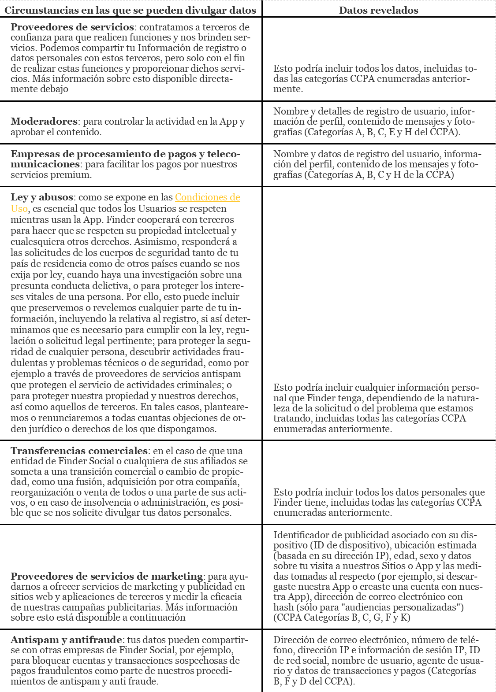

Te damos la bienvenida a las Condiciones de uso de Finder ("Condiciones"). Este es un contrato entre tú y FinderSocial (definido más abajo) y queremos que conozcas tus derechos y los nuestros antes de que uses la aplicación de Finder ("Finder" o la "App"). Asegúrate de leer estas Condiciones antes de usar la app, ya que una vez dentro, estás condiciones serán de aplicación, ¡así que sería buena idea leerlas primero!. Ten en cuenta que si te suscribes durante un periodo (el "Periodo Inicial"), la duración de tu suscripción será automáticamente renovada por periodos adicionales de la misma duración que el Periodo Inicial según la tarifa vigente de Finder por tales servicios, a menos que canceles tu suscripción conforme a la Sección 5 a continuación. También debes tener en cuenta que la Sección 13 de estas Condiciones contiene disposiciones que rigen cómo serán resueltas las reclamaciones que tú y Finder tengáis en contra uno del otro. En particular, contiene un acuerdo de arbitraje que, con excepciones limitadas, exige que las disputas entre nosotros se sometan a arbitraje vinculante y definitivo. Si eres un usuario existente o un nuevo usuario que se haya unido a Finder antes del 18 de febrero de 2022, tienes derecho a ser excluido del acuerdo de arbitraje de conformidad con la Sección 13 a continuación. Si no te excluyes del acuerdo de arbitraje de conformidad con la Sección 13, o si te unes a Bumble después del 19 de febrero de 2022, (1) solo se te permitirá presentar reclamaciones y buscar reparación contra nosotros de forma individual; y (2) estás renunciando a su derecho a buscar reparación en un tribunal de justicia y a tener un juicio con jurado sobre tus reclamaciones. Y un aviso a los suscriptores de California: Puedes cancelar tu suscripción y pedir un reembolso en cualquier momento anterior a la medianoche del tercer día laborable tras la fecha de suscripción. Si te suscribes usando tu Apple ID, el reembolse será gestionado por Apple, no Finder. Para solicitar un reembolso, visita https://getsupport.apple.com. Si te has suscrito a través de tu cuenta de Google Play Store o de Finder, ponte en contacto con nuestro Equipo de atención al usuario..
Antes de poder usar nuestra App, tendrás que registrar una cuenta ("Cuenta"). Para crearla debes: tener al menos 18 años o la mayoría de edad para poder formalizar un contrato legalmente según las leyes de tu país de origen; y tener permiso legal para usar esta App bajo las leyes de tu país. Puedes crear una cuenta registrándote de forma manual. Al crear una cuenta nos autorizas a ver, mostrar y utilizar cierta información de tu cuenta (p.ej.: tus fotos de perfil, tu situación sentimental, tu ubicación y tus amistades). Si deseas obtener más información sobre los datos que utilizamos y cómo, consulta nuestra Política de privacidad. Al usar nuestra app, aceptas que podamos recopilar y usar dichos datos de conformidad con nuestra Política de privacidad. Desafortunadamente, no podemos dejar que uses una Cuenta de otra persona o que compartas la tuya sin permiso. Pasarás un gran rato en Finder, pero si sientes que te tienes que marchar, puedes eliminar tu Cuenta en cualquier momento. Para ello, dirígete a 'Configuración' y haz clic en el enlace 'Eliminar cuenta'. Tu cuenta será eliminada inmediatamente aunque Tu Contenido (definido más abajo) tardará unos días en ser borrado de la App. La información de tu perfil será tratada en concordancia con nuestra Política de privacidad. Si eliminas tu Cuenta e intentas crear una nueva en este plazo con los mismos datos de acceso, reactivaremos tu Cuenta anterior. Usamos una combinación de sistemas automatizados y un equipo de moderadores para monitorear y revisar cuentas y mensajes en busca de contenido que indique incumplimientos de estos Términos. Nos reservamos el derecho exclusivo a suspender o eliminar cualquier Cuenta, restringir el acceso a la App, o hacer uso de cualquier herramienta operativa, tecnológica, legal o cualquier otra para asegurar estas Condiciones (incluyendo sin límite, el bloquea de direcciones IP específicas), en cualquier momento sin responsabilidad ni obligación de notificarlo. Sin limitar lo anterior de ninguna manera, nos reservamos expresamente el derecho a rescindir o suspender tu Cuenta sin aviso (1) por violar estas condiciones, (2) a causa de tu conducta en la App, o tu conducta con otros usuarios en la App (incluyendo tu conducta "offline") si, a nuestro exclusivo criterio, determinamos que su conducta fue inapropiada, (3) si nosotros o nuestros afiliados, a nuestra discreción o a su entera discreción, determinamos que tu conducta en otras apps dirigidas por nuestros afiliados fue inapropiada, o (4) por cualquier motivo que consideremos, a nuestro exclusivo criterio, que justifica la rescisión. Si tu Cuenta es rescindida o suspendida, aceptas que no recibirás un reembolso por ninguno de los servicios o funcionalidades de pago que ya se te haya cobrado. Puede que no tengas acceso o no puedas usar zonas no públicas de la App o del sistema. Para acceder a ciertas partes de la App es necesario tener registrada una Cuenta para poder acceder.
Hay tres tipos de contenido a los que tendrás acceso en la App:
contenido que subas ("Tu Contenido");
contenido que otro usuario suba ("Contenido de usuarios"); y
contenido que FinderSocial proporciona (incluyendo, sin limitación, bases de datos y/o software) ("Nuestro
Contenido").
Hay cierto contenido que no está permitido en Finder
Queremos que nuestros usuarios se expresen libremente y publiquen todo tipo de cosas en Finder, pero queda
restringido todo Contenido que:
contenga lenguaje o imaginería que pueda ser abusivo, insultante, amenazante o promueva racismo, sexismo,
odio o intolerancia hacia otra persona (incluyendo, por ejemplo, y sin limitación, el lenguaje que podría
considerarse discriminatorio respecto a la raza, el color, la etnia, el origen nacional, la religión, la
discapacidad, la orientación sexual, la expresión de género, la identidad de género o la apariencia física
de una persona);
sea obsceno, pornográfico, violento o pueda ofender a la dignidad humana (incluyendo, por ejemplo, y sin
limitación, el lenguaje que podría considerarse discriminatorio respecto a la raza, el color, la etnia, el
origen nacional, la religión, la discapacidad, la orientación sexual, la expresión de género, la identidad
de género o la apariencia física de una persona);
sea ofensivo, insultante, amenazante, discriminatorio o promueva racismo, sexismo, odio o intolerancia
(incluyendo, por ejemplo, y sin limitación, el lenguaje que podría considerarse discriminatorio respecto a
la raza, el color, la etnia, el origen nacional, la religión, la discapacidad, la orientación sexual, la
expresión de género, la identidad de género o la apariencia física de una persona);
promueva cualquier actividad ilegal, incluyendo, sin limitación, terrorismo, racismo o cualquier otra que
pueda considerarse delictiva;
sea difamatorio;
esté relacionado con actividades comerciales (incluyendo, sin limitación, la venta de productos o
servicios, competiciones, publicidad, enlaces a otras páginas web o números de teléfono premium);
esté relacionado con el envío de correo no deseado o “spam”;
contenga programas espía (spyware), adware, virus, documentos corruptos, programas gusano o cualquier otro
código malintencionado destinado a interrumpir, dañar o limitar el funcionamiento de cualquier software,
hardware, telecomunicaciones, redes, servidores u otros equipos, Troyanos o cualquier otro material
destinado a dañar, interferir, interceptar o expropiar información o datos personales de Finder;
en sí mismo, o en el momento de añadirlo a la página, infrinja derechos de terceros (incluyendo, sin
limitación, derechos de propiedad intelectual y de privacidad);
muestre a otra persona y haya sido creado o distribuido sin el consentimiento expreso de la misma;
sea perjudicial para menores; o
te hagas pasar por otra persona, incluyendo el uso de un nombre falso.
Finder tiene una política de tolerancia cero con este tipo de Contenido.
Tu Contenido
Aceptas que Tu Contenido debe cumplir nuestras Normas de la comunidad en http://www.findersocialapp.com actualizadas periódicamente. Como
tu Contenido es único, eres el/la responsable del mismo y el cual indemnizarás y defenderás y nos
mantendrás
al margen de cualquier denuncia relacionada con él. Puede sonar muy directo, pero eres lo que publicas.
No publiques ningún contacto personal o información bancaria en tu perfil que tengan relación contigo u
otra
persona (léase nombres, direcciones, códigos postales, móviles, correos electrónicos, URLs, tarjetas de
crédito/débito u otros datos bancarios). Si decides revelar cualquier información personal a cualquier
usuario, de cualquier manera, estará bajo tu responsabilidad. Te pedimos que actúes con precaución a la
hora
de revelar estos detalles tal y como lo harías en cualquier otro ámbito.
Como Finder es una comunidad pública, Tu Contenido será visible a otros usuarios de la App alrededor del
mundo, de manera inmediata, así que asegúrate de estar de acuerdo con lo que vayas a publicar. Asimismo,
reconoces y aceptas que otros usuarios y personas que visiten, participen o reciban un enlace a la app
(por
ejemplo, personas que reciban un enlace al perfil de un usuario o contenido compartido por otros usuarios
de
Finder) podrán ver tu Contenido. Al subir Tu Contenido en Finder, nos garantizas que tienes los derechos
necesarios para hacer eso y automáticamente nos das el derecho no exclusivo, perpetuo, con licencia a
nivel
mundial para usar Tu Contenido de cualquier manera (incluyendo, sin límite, edición, copia, modificación,
adaptación, traducción, creación de trabajos derivados, anuncios, distribución y cualquier otra forma
necesaria para hacerlo disponible para el resto de usuarios como Contenido, tanto en parte como en su
totalidad, en cualquier formato conocido o desarrollado en el futuro).
Podemos asignar la licencia anterior a nuestros afiliados y sucesores sin necesidad de tener una
aprobación
por tu parte.
No estamos obligados a almacenar Tu Contenido. Si es importante, deberías hacer una copia.
Para que podamos evitar el uso no consentido de tu contenido por parte de otros miembros o terceros fuera
de
Finder, nos autorizas a actuar en tu nombre con respecto a dichos usos infractores y/o no autorizados.
Esto
incluye expresamente la autoridad, pero no la obligación, de que enviemos avisos de retirada (incluyendo,
sin limitación, de acuerdo con el 17 U.S.C. § 512(c)(3) (es decir, avisos de retirada de la DMCA) en tu
nombre si Tu Contenido es tomado y utilizado por terceros fuera de Finder.
Contenido de usuarios
Otros usuarios también compartirán contenido en la App. Contenido de usuarios pertenecerá a aquellos que
lo
publiquen y será almacenado en nuestros servidores y publicado en la App en la dirección que ese usuario
decida
Tú no tienes ningún derecho en relación al Contenido de usuarios y solo podrás usar la información
personal
de otros usuarios de Finder si coincide con el propósito de Finder de permitir a la gente conocerse. No
puedes usar la información de otros usuarios para fines comerciales, spam, abuso, acoso o tratos ilegales.
Nos reservamos el derecho a eliminar tu cuenta si haces un mal uso de la información de otro usuario.
Contenido de usuarios está sujeto a la sección 512(c) y/o 512(d) del Acta de derechos de autor digitales
del
milenio de 1998. Si tienes alguna duda sobre el Contenido de usuarios, dirígete al punto destinado para
ello
más abajo.
Nuestro contenido
Puede que te preguntes qué pasa con el resto del contenido en Finder. Pues bien, ¡nos pertenece! Cualquier
otro texto, contenido, gráfico, interfaces, marcas, logos, sonidos, diseños y cualquier otra propiedad
intelectual que aparezca en Finder, así como el software y la(s) base(s) de datos de Finder, son de
nuestra
propiedad, están controlados o tienen licencia y están protegidos por derechos de autor, marcas
registradas,
datos, derechos de bases de datos y/u otros derechos legales de propiedad intelectual. Todos los derechos,
títulos e intereses sobre nuestro contenido nos pertenecen en todo momento.
Te proveemos una licencia no exclusiva, limitada, personal e intransferible de acceder y usar Nuestro
Contenido, sin el derecho a una sub licencia, bajo estas condiciones:
no debes usar, vender, modificar o distribuir Nuestro Contenido excepto el permitido por el funcionamiento
de la App;
no debes usar nuestro nombre en meta-etiquetas, palabras clave y/o texto encriptado;
no debes crear nada derivado de Nuestro Contenido ni rastrear, inutilizar, descompilar, analizar o
explotarlo comercialmente, total o parcialmente, de ninguna forma; y
solo debes usar Nuestro Contenido por razones legales.
Nos reservamos todos los derechos restantes.
Sin obligación de preseleccionar el contenido.
Dado que Finder es una comunidad en línea, generalmente tratamos de no meternos en medio y, por lo tanto,
no
asumimos ninguna obligación de preseleccionar Tu contenido o cualquier Contenido de usuarios. Sin embargo,
puede haber ocasiones en las que debamos intervenir, y nos reservamos el derecho de revisar,
preseleccionar,
rechazar y/o eliminar cualquier Contenido de usuarios y Tu contenido, incluido el contenido intercambiado
entre usuarios en mensajes directos.
Al utilizar la app, te comprometes a: adherirte a y respetar todas las leyes de aplicación, incluidas y no limitadas a las leyes de privacidad, propiedad intelectual, anti spam e igualdad y a los requisitos normativos; utilizar tu nombre y edad reales al crear tu cuenta de Finder y en tu perfil; y hacer un uso profesional de los servicios. Te comprometes a no: actuar de manera ilegal o poco profesional, incluyendo actos deshonestos, abusivos o discriminatorios; falsear tu identidad, tu edad, tus ocupaciones actuales o anteriores, tus cualificaciones o tus afiliaciones con una persona o entidad; revelar información que no tienes el consentimiento de revelar; hostigar o acosar a cualquier otro/a usuario/a de la aplicación; crear o desarrolar una estafa piramidal, fraude u otra práctica similar, o; desarrollar, apoyar o utilizar software, dispositivos, scripts, robots, otros tipos de códigos móviles o cualquier otro medio o proceso (incluyendo crawlers, plugins del navegador y tecnología complementaria o de otro tipo) para extraer o exfiltrar de otro modo de Finder o sus servicios, o copiar de otro modo perfiles y otros datos de los servicios. No queremos usuarios que no respeten la comunidad de Finder. Puedes denunciar cualquier abuso o quejarte de cualquier Contenido de usuarios por medio de nuestro canales de contacto. Puedes también denunciar a un usuario directamente desde un perfil o chat, seleccionando el enlace 'Bloquear & Denunciar' que aparece. Nos reservamos el derecho a investigar cualquier posible infracción de estas Condiciones, de los derechos de cualquier usuario de Finder o de los derechos de terceros, y podremos, a nuestra entera discreción, rescindir inmediatamente el derecho de cualquier usuario a utilizar la App sin previo aviso, tal y como se establece más adelante en la Sección 1, y/o eliminar cualquier contenido de los miembros inadecuado, que infrinja o que no esté autorizado en la App. No controlamos nada de los que nuestros usuarios dicen o hacen, por lo que eres el/la único/a responsable de tus interacciones con otros usuarios de la App. ENTIENDES QUE FINDER ACTUALMENTE NO REALIZA CONTROLES DE ANTECEDENTES PENALES A SUS USUARIOS. FINDER SOCIAL NO INVESTIGA SOBRE EL PASADO DE SUS USUARIOS NI INTENTA VERIFICAR SUS AFIRMACIONES. FINDER SOCIAL NO HACE REPRESENTACIONES NI GARANTÍAS EN RELACIÓN CON LA CONDUCTA DE NINGUNO DE SUS USUARIOS O SU COMPATIBILIDAD CON NINGÚN USUARIO PRESENTE O FUTURO. FINDER SOCIAL SE RESERVA EL DERECHO DE REALIZAR CUALQUIER VERIFICACIÓN DE ANTECEDENTES CRIMINALES U OTRAS PRUEBAS (COMO BÚSQUEDAS DE REGISTRO DE OFENSORES SEXUALES) EN CUALQUIER MOMENTO Y A UTILIZAR LOS REGISTROS PÚBLICOS DISPONIBLES PARA CUALQUIER FIN. Acepta, y por la presente lo hace, liberar de responsabilidad a Finder Social y a sus sucesores de cualesquiera reclamaciones, demandas, pérdidas, daños, derechos y acciones de cualquier tipo, incluyendo lesiones personales, muerte y daños a la propiedad, que surjan directa o indirectamente de tus interacciones con o de la conducta de otros usuarios de la App. Si eres residente de California, por la presente renuncias a la Sección 1542 del Código Civil de California, que dice: "Una exención general no se extiende a las reclamaciones que el acreedor o la parte exonerante no sabe ni sospecha existir a su favor al momento de ejecutar la liberación y que, si lo conoce, habría afectado materialmente su acuerdo con el deudor o la parte liberada". El comunicado anterior no se aplica a cualesquiera reclamaciones, demandas, pérdidas, daños, derechos y acciones de cualquier tipo, incluyendo lesiones personales, muerte y daños a la propiedad por cualquier práctica comercial desmedida por Finder Social o por fraude, engaño, falsedad, promesa, tergiversación u ocultación, supresión u omisión de cualquier hecho material en relación con la App. Hacer un uso indebido está prohibido. Esto incluye, bajo cualquier circunstancia, cualquiera de nuestras interfaces disponibles, a menos que así se haya especificado en un acuerdo por separado con nosotros.
Para más información sobre cómo Finder Social recoge, usa y comparte tu información, visita nuestra Política de privacidad. Al usar Finder, nos autorizas a utilizar dicha información conforme a la Política de privacidad.
En general. Finder puede ofrecer productos y servicios para su adquisición en la App ("Compras in-pp"). Si eliges hacer una Compra en la reconoces y aceptas cualesquiera otras condiciones que pudieren ser de aplicación, tal y como se expone a continuación. Puedes hacer una Compra in-app a través de los siguientes métodos de pago ("Métodos de pago"): (a) haciendo una compra a través de una plataforma de una tienda de terceros como Apple App Store y Google Play Store ("Tiendas de terceros"), o (b) pagando con tu tarjeta de crédito, débito o cuenta de PayPal, en cuyo caso el pago será procesado por un tercero. Al solicitar un Producto in-app, nos autorizas a realizar el cargo correspondiente a tu Método de pago escogido. En caso de que no recibamos el pago a través de tu Método de pago, aceptas realizar el pago de la cantidad correspondiente tan pronto como te lo solicitemos. Suscripciones y renovación automática: Finder puede ofrecer servicios como las suscripciones de renovación automática, p.ej.: suscripción semanal, suscripción mensual, suscripción trimestral ("Servicios premium"). SI ADQUIERES UNA SUSCRIPCIÓN DE RENOVACIÓN AUTOMÁTICA, DICHA SUSCRIPCIÓN SE RENOVARÁ AL FINAL DEL PERIODO A MENOS QUE LA CANCELES, AL PRECIO VIGENTE DE TALES SUSCRIPCIONES DE FINDER. A fin de evitar cargos por un nuevo periodo de suscripción, debes cancelarla, como se describe a continuación, antes del fin del periodo de suscripción vigente. Eliminar tu cuenta o tu aplicación del dispositivo no cancela tu suscripción. Los cambios en los precios de los Servicios premium a los que te has suscrito te serán notificados y tendrás oportunidad de cancelar. Si Finder cambia estos precios y tú no cancelas tu suscripción, aceptas que se te cobrará el precio vigente de dicha suscripción de Finder. Cancelar suscripciones. Si has adquirido una suscripción directamente a través de Finder, puedes cancelar o cambiar tu Método de pago desde la opción de la configuración de pagos en tu perfil. Si adquieres una suscripción a través de una Tienda de terceros, como Apple App Store o Google Play Store, necesitarás acceder a tu cuenta de esa Tienda de terceros y seguir las instrucciones para cambiar o cancelar tu suscripción. Si la cancelas, podrás hacer uso de ella hasta el fin del periodo por el que hayas pagado, pero (i) no podrás (excepto como se establece en la subsección titulada "Reembolsos" más adelante) optar por un reembolso prorrateado, (ii) tu suscripción no será renovada cuando dicho periodo expire y (iii) no podrás usar los Servicios premium o Compras in-app activados por tu suscripción. Periodos de prueba gratuitos. Si activas un periodo de prueba gratuito y no lo cancelas, tu periodo de prueba puede convertirse en una suscripción y se efectuará un cargo del precio vigente en tu Método de Pago por dicha suscripción. Una vez que tu periodo de prueba gratuito se convierta en una suscripción de pago, esta continuará renovándose automáticamente al final de cada periodo, efectuando los cargos en tu Método de Pago, hasta que la canceles. Para evitar cargos por un nuevo periodo de suscripción, debes cancelar antes del final del periodo de suscripción vigente o del final de periodo de prueba gratuito como se describe a continuación. Eliminar tu cuenta o la aplicación de tu dispositivo no cancela tu periodo de pago gratuito. Si te has apuntado a una prueba gratuita en Finder a través de Apple Store o Google Play Store anteriormente, no podrás optar a otra prueba gratuita y entonces se te apuntará automáticamente a una suscripción y se te cobrará como se describe en este párrafo. Reembolsos. Generalmente, todos los cargos por compras no son reembolsables, y no hay reembolsos ni créditos por periodos parcialmente usados. Para los suscriptores residentes en Arizona, California, Connecticut, Illinois, Iowa, Minnesota, Nueva York, Carolina del Norte, Ohio, Rhode Island, y Wisconsin, se aplican los términos a continuación: Puedes cancelar tu suscripción, sin penalización ni obligación, en cualquier momento anterior a la medianoche del tercer día laborable tras la fecha de suscripción. En el caso de que fallezcas antes del final de su período de suscripción, tu patrimonio tendrá derecho a un reembolso de la parte de cualquier pago que hayas realizado por tu suscripción que se puede asignar al período posterior a tu muerte. En el caso de que quede discapacitado (de manera que no pueda usar Finder) antes de finalizar tu periodo de suscripción, tendrás derecho a un reembolso de la parte de cualquier pago que hayas realizado por tu suscripción que se puede asignar al período posterior a tu discapacidad proporcionando un aviso a la compañía de la misma manera en que solicitas un reembolso como se describe a continuación. Para solicitar un reembolso: Además de cancelar, debes solicitar un reembolso para recibir uno. Si te suscribiste con tu ID de Apple, los reembolsos los gestiona Apple, no Finder. Para solicitar un reembolso, ve a iTunes, haz clic en tu ID de Apple, selecciona "Historial de compras", busca la transacción y presiona "Informar de un problema". También puedes enviar una solicitud a https://getsupport.apple.com Para todas las otras compras: ponte en contacto con el Equipo de atención al cliente con tu número de pedido (puedes encontrarlo en el correo electrónico de confirmación del pedido o, si realizaste la compra desde Google Play Store entrando en Google Wallet). Impuestos. Los pagos requeridos bajo esta Sección 5 no incluyen ningún impuesto a las ventas en relación con los Servicios premium proporcionados bajo estas Condiciones. Si Finder determina que tiene una obligación legal de cobrarte un impuesto sobre las ventas en relación con estas Condiciones, Finder te cobrará dicho impuesto sobre las ventas además de los pagos requeridos en esta Sección 5. Si cualquier Servicio Premium o pago por cualquier Servicio premium bajo estas Condiciones están sujetos a cualquier impuesto sobre las ventas en cualquier jurisdicción y no has remitido el impuesto sobre las ventas aplicable a Finder, serás responsable del pago de dicho impuesto sobre las ventas y cualquier sanción o interés relacionado a la autoridad fiscal correspondiente. Tal como se entiende en el presente documento, "Impuesto a las ventas" significa cualquier impuesto a las ventas o uso y cualquier otro impuesto medido por el producto de las ventas que sea el equivalente funcional de un impuesto a las ventas donde la jurisdicción tributaria aplicable no impone un impuesto a las ventas o uso.
En ocasiones, es posible que puedas comprar una licencia limitada, personal, intransferible, no sublicenciable y revocable para acceder a funcionalidades especiales de uso limitado de Finder, referidos aquí como "Artículos virtuales". Solo puedes comprar Artículos virtuales a través de Finder o asociados de Finder. Los Artículos virtuales representan un derecho de licencia limitado regido por este Acuerdo, y, salvo que lo prohíba la ley aplicable, ningún título o propiedad en o de los Artículos virtuales te es transferido o asignado. Este Acuerdo, y tu adquisición de Artículos virtuales, no constituye la venta de ningún derecho sobre los Artículos virtuales. Cualquier saldo de Artículo virtual que se muestre en tu cuenta no constituye un saldo del mundo real ni refleja ningún valor almacenado, pero en su lugar muestra el alcance de tu licencia para acceder a los Artículos virtuales. Los Artículos virtuales no incurren en cobros por no uso. Tu licencia de Artículos virtuales será rescindida al suceder lo primero de: Finder abandone la provisión del servicio o el cierre o término de tu cuenta. Finder puede también, en ocasiones, proporcionar Artículos virtuales como extras de, o partes de, suscripciones de pago por sus servicios. Tu capacidad para usar los Artículos virtuales a los que tienes acceso de esta manera puede terminar al final de cada periodo de tu suscripción y tu acceso a los Artículos virtuales puede no "renovarse" o acumularse a través de períodos de suscripción adicionales. Tu acceso a los Artículos virtuales obtenido a través de suscripciones puede también terminarse si cancelas tu suscripción. Finder, a su entera discreción, se reserva el derecho de cobrar por el derecho a acceder o utilizar Artículos virtuales y/o puede distribuir Artículos virtuales con o sin cargo. Finder puede administrar, regular, controlar, modificar o eliminar Artículos virtuales en cualquier momento, incluyendo tomar acciones que puedan afectar el valor percibido o el precio de compra, si corresponde, de cualquier Artículo virtual y Finder no tendrá ninguna responsabilidad ante ti por hacerlo. No venderás, canjearás ni transferirás Artículos virtuales a ninguna persona o entidad. Los artículos virtuales solo se pueden canjear a través de nuestros Servicios. TODAS LAS COMPRAS Y AMORTIZACIONES DE ARTÍCULOS VIRTUALES REALIZADAS A TRAVÉS DE NUESTROS SERVICIOS SON DEFINITIVAS Y NO REEMBOLSABLES. ACEPTAS QUE FINDER NO ESTÁ OBLIGADO A PROPORCIONAR NINGÚN REEMBOLSO POR NINGÚN MOTIVO, Y QUE NO RECIBIRÁS DINERO U OTRA COMPENSACIÓN POR LOS ÁRTÍCULOS VIRTUALES NO USADOS CUANDO UNA CUENTA SE CLAUSURA, SEA VOLUNTARIA O INVOLUNTARIAMENTE.
Podremos enviarte una serie de correos electrónicos, mensajes de texto, notificaciones automáticas, alertas y otros mensajes relacionados con la aplicación o los servicios de Finder, tales como ofertas, productos, mejoras, promociones y eventos. Al instalar la aplicación, podrás decidir si aceptas o rechazas las alertas y las notificaciones. Si las rechazas, no recibirás ninguna alerta o notificación. Si las aceptas, te enviaremos alertas y notificaciones de forma automática. Si en algún momento deseas dejar de recibir alertas y notificaciones automáticas, puedes cancelarlas modificando los ajustes de las notificaciones en tu dispositivo móvil. Si deseas dejar de recibir otros tipos de mensajes como correos electrónicos, mensajes de texto, etc., tendrás la posibilidad de darte de baja siguiendo las instrucciones indicadas en dichos mensajes o enviándonos un correo electrónico con la solicitud a contacto@findersocialapp.com. La aplicación podrá darte acceso a o poner a tu disposición cierto contenido o productos, servicios y material en base a tu ubicación. Para poder ofrecerte estas oportunidades, la aplicación determinará tu ubicación utilizando uno o varios puntos de referencia tales como programas de GPS o Bluetooth u otros programas de geolocalización de tu dispositivo móvil. En caso de haber desactivado el GPS, el Bluetooth u otros programas de geolocalización, o de no autorizar a la aplicación a acceder a tus datos de localización, no disfrutarás de contenido, material, productos o servicios específicos a tu ubicación. Si deseas obtener más información sobre cómo la aplicación utiliza y almacena tu información de localización, lee la Política de privacidad.
LA APP, PÁGINA, NUESTRO CONTENIDO Y CONTENIDO DE USUARIOS SON SUMINISTRADOS TAL Y COMO SON Y SEGÚN SU DISPOSICIÓN, SIN GARANTÍA DE NINGÚN TIPO, BIEN EXPLÍCITA O IMPLÍCITA, INCLUYENDO LA NO LIMITADA, ACORDE A CUALQUIER PROPÓSITO, TÍTULO O NO INFRACCIÓN. SIN LIMITAR LO ANTERIOR, NO GARANTIZAMOS LA COMPATIBILIDAD DE NINGÚN MATCH SI LA LEY NO PERMITE LA EXCLUSIÓN EXPLÍCITA O IMPLÍCITA DE LAS GARANTÍAS MENCIONADAS ANTERIORMENTE, GARANTIZAREMOS LA GARANTÍA MÍNIMA APLICABLE SEGÚN LA LEY VIGENTE. NINGÚN AVISO O INFORMACIÓN, ORAL O ESCRITA, DEBE CREAR GARANTÍA, REPRESENTACIÓN O GARANTE NO EXPRESAMENTE ESPECIFICADO EN ESTA SECCIÓN. ADEMÁS, NO PODEMOS GARANTIZAR QUE LA APP O LA PÁGINA NO CESE SU ACTIVIDAD, ESTÉ LIBRE DE ERRORES O QUE TU USO DEL CONTENIDO DE LA MISMA CUMPLA CON TUS EXPECTATIVAS, O QUE LA APP, LA PÁGINA, NUESTRO CONTENIDO, EL CONTENIDO DE USUARIOS O CUALQUIER PARTE DE LOS MISMOS SEA CORRECTA, PRECISA O VERAZ. TU USO DE LA APP O LA PÁGINA ESTÁ BAJO TU RESPONSABILIDAD. ERES EL/LA ÚNICO/A RESPONSABLE DE TUS INTERACCIONES CON OTROS USUARIOS. FINDER SOCIAL NO ES RESPONSABLE DE LA CONDUCTA DE LOS USUARIOS. FINDER NO COMPRUEBA LOS ANTECEDENTES PENALES DE SUS MIEMBROS.
NI NOSOTROS NI OTRO DUEÑO SERÁ RESPONSABLE DE DAÑOS DIRECTOS E INDIRECTOS, ACCIDENTALES O A CONSECUENCIA DE, ESPECIAL O PUNITIVA INCLUYENDO, SIN LIMITACIÓN, PÉRDIDA DE DATOS, INGRESOS, BENEFICIOS, BUENA VOLUNTAD, PÉRDIDA O DAÑO DE PROPIEDAD Y RECLAMACIÓN DE TERCEROS DEBIDO A TU ACCESO Y USO A LA APP, PÁGINA, NUESTRO CONTENIDO O CONTENIDO DE USUARIOS, SIN EMBARGO CAUSADOS, BASADOS EN LA RUPTURA DEL CONTRATO, AGRAVIOS (INCLUYENDO NEGLIGENCIA), INCUMPLIMIENTO DEL DERECHO DE PROPIEDAD O RESPONSABILIDAD DE PRODUCTO. LO ANTERIOR APLICARÁ INCLUSO SI FUIMOS AVISADOS DE LA POSIBILIDAD DE DICHOS DAÑOS. SI ESTÁS INSATISFECHO/A, YA SEA POR LA RAZÓN QUE SEA, LA SOLUCIÓN SERÍA QUE DEJARAS DE USAR LA APP Y LA PÁGINA. A PARTIR DE AQUÍ RENUNCIAS A TODAS Y CADA UNA DE LAS RECLAMACIONES DERIVADAS DE TU USO DE LA APP O PÁGINA. ALGUNOS PAÍSES NO PERMITEN DECLARACIONES DE GARANTÍAS EXPLÍCITAS O LA EXCLUSIÓN O LIMITACIÓN DE CIERTOS TIPOS DE DAÑOS, ESTAS PROVISIONES PUEDEN APLICARSE A TI. SI NINGUNA PARTE DE ESTA LIMITACIÓN EN RESPONSABILIDAD ES ENCONTRADA DE SER INVÁLIDA O INEJECUTABLE, POR CUALQUIER RAZÓN, NUESTRA RESPONSABILIDAD NO EXCEDERÁ LOS DIEZ PESOS ($10). LA LIMITACIÓN DE RESPONSABILIDAD ES UN ELEMENTO FUNDAMENTAL DE LA OFERTA Y REFLEJA UNA CLARA ASIGNACIÓN DEL RIESGO. LA APP Y PÁGINA NO ESTARÍAN PROVISTAS DE DICHAS LIMITACIONES Y ACEPTARÍAS ESAS LIMITACIONES Y EXCLUSIONES DE RESPONSABILIDAD Y LAS SOLUCIONES ESPECÍFICAS PREVALECERÁN SI SE ENCUENTRA QUE SE HA FALLADO EN SU PROPÓSITO PRINCIPAL. LO ANTERIOR NO SE APLICA A RESPONSABILIDADES DERIVADAS DE CUALQUIER FRAUDE O DECLARACIONES FRAUDULENTAS O CUALQUIER OTRA RESPONSABILIDAD QUE NO PUEDA SER LIMITADA POR LA LEY APLICABLE.
Todas las acciones e información que publiques en Finder estarán bajo tu responsabilidad. Por lo tanto, aceptas indemnizar, defender, ayudar y apoyar tanto a nosotros como a nuestras empresas colaboradoras, licenciatarios, afiliados, contratistas, oficinistas, empleados, representantes y agentes, de y en contra de denuncias de terceros, daños (reales o consecuentes), acciones, procedimientos, demandas, pérdidas, responsabilidades, costes y gastos (incluyendo tasas legales) derivadas de nuestra conexión con: cualquier acto negligente, omisión o conducta temeraria por tu parte; tu acceso y uso de la App; el Contenido que subas a la App; cualquier violación de estas Condiciones de Uso; y/o tu violación de cualquier ley o derecho de terceras partes. Mantenemos el derecho exclusivo a restaurar, acordar y pagar todas y cada una de las reclamaciones recibidas en nuestra contra sin tu consentimiento previo. Si así lo estimamos, tendrás que cooperar de manera íntegra y razonable en la defensa de la reclamación correspondiente. La disposición anterior no exige que indemnices a Finder Social por cualquier práctica comercial desmedida o cualquier fraude, engaño, promesa falsa, tergiversación u ocultación, supresión u omisión de cualquier hecho material en relación con la App.
Si crees que algún contenido de Finder infringe los derechos de autor de una obra de tu propiedad, envía una notificación alegando dicha infracción ("DMCA Takedown Notice") al responsable de derechos de autor de Finder Social. La notificación de retirada debe incluir lo siguiente: Una firma física o digital de una persona autorizada para actuar en nombre de quién su derecho ha sido infringido; Identificación del trabajo con derecho de autor reclamado de haber sido infringido o, si varios, la lista representativa de cada uno de ellos; Identificación del material que está infringiendo o sujeto a infringir que debe ser eliminado o cuyo acceso debe ser desactivado y la información necesaria para localizarlo; Información suficiente para que el proveedor pueda contactar contigo como dirección, teléfono y, si es posible, correo electrónico; Una nota que exprese tu buena fe a la hora de denunciar el uso del material no autorizado por su autor, su agente, o la ley y Una nota que, bajo sanción, exprese que la información en la notificación es precisa y estás autorizado/a en nombre del autor del derecho infringido. Las notificaciones de retirada deben enviarse al responsable de derechos de autor de Finder Social en contacto@findersocialapp.com
Las condiciones expuestas a continuación solo son de aplicación para aquellos usuarios que hayan descargado la aplicación desde una Tienda de terceros. En la medida en la que el resto de términos y condiciones de las presentes Condiciones sean menos restrictivas que las condiciones expuestas en esta sección o entren en conflicto con las mismas, serán de aplicación las condiciones más restrictivas de esta sección con respecto a la aplicación y a la Tienda de terceros. Por la presente, reconoces y aceptas lo que a continuación queda expuesto: Las presentes Condiciones son vinculantes entre tú y Finder Social y no los proveedores de la Tienda de terceros, y Finder Social (y no los proveedores de la Tienda de terceros) es responsable a título exclusivo de la aplicación y su contenido. En la medida en la que las presentes condiciones establezcan normas de uso de la aplicación que sean menos restrictivas que las condiciones de aplicación de la Tienda de terceros desde la que hayas descargado la aplicación o entren en conflicto con las mismas, serán de aplicación las condiciones más restrictivas de la Tienda de terceros. El proveedor de la Tienda de terceros no tiene ningún tipo de obligación de ofrecer servicios de asistencia y mantenimiento para la aplicación. Finder Social es responsable a título exclusivo de todas las garantías del producto, contempladas de forma explícita o implícita por la ley vigente, con la limitación de aquellas que hubieran sido excluidas de forma explícita. El proveedor de la Tienda de terceros no tiene ningún tipo de obligación con respecto a las garantías de la aplicación y le corresponderá a Finder Social cumplir con la garantía aplicable en relación con cualesquiera otras reclamaciones, pérdidas, responsabilidades, daños, costes o gastos atribuibles a un fallo o error. Será responsabilidad de Finder Social y no del proveedor de la Tienda de terceros encargarse de las reclamaciones que el usuario o un tercero pueda realizar con respecto a la aplicación o a la posesión y uso de la misma, incluidas y no limitadas a: (i) reclamaciones en materia de responsabilidad del producto; (ii) reclamaciones por incumplimiento por parte de la aplicación de cualesquiera requisitos jurídicos o normativos de aplicación; (iii) reclamaciones efectuadas en el marco de la legislación relacionada con la protección del consumidor o similar; y/o (iv) reclamaciones por razón de vulneración de la propiedad intelectual. El proveedor de la Tienda de terceros y sus subsidiarios son terceros beneficiarios del presente Acuerdo y, al aceptar las presentes Condiciones, el proveedor de la Tienda de terceros del que el usuario hubiere obtenido la aplicación se reserva el derecho (y se considerará que ha aceptado dicho derecho) a aplicar estas Condiciones en calidad de tercero beneficiario del mismo. En caso de que hubiere una contradicción entre las presentes Condiciones y las condiciones de la Tienda de terceros o del operador de telefonía, las condiciones de la Tienda de terceros o del operador de telefonía serán de aplicación. En ningún caso asumiremos ninguna responsabilidad por productos o servicios obtenidos a través de una Tienda de terceros u operador de telefonía. Por ello, te recomendamos que te informes debidamente antes de efectuar una transacción en línea con terceros.
Estas Condiciones son de aplicación desde la fecha en que las aceptas (como se describe en el preámbulo) y continúan hasta que se termine de acuerdo con los términos presentes. Si quieres rescindir estas Condiciones, debes hacerlo (a) notificándolo a Finder Social en cualquier momento, y (b) cerrando tu cuenta. Tu notificación debe ser enviada a la dirección de Finder Social que aparece abajo. Ten en cuenta que si rescindes estas Condiciones, tu suscripción continuará hasta el fin del período de suscripción por el que se han pagado las tarifas aplicables, y no tendrás derecho a un reembolso excepto por lo recogido en la Sección 5. Finder Social puede rescindir o suspender estas Condiciones, incluyendo tu Cuenta, si vulneras dichas Condiciones o si Finder Social está obligado a hacerlo por la ley aplicable. Aceptas que todas las rescisiones por causa justificada se realizarán a exclusivo criterio de Finder Social y que Finder Social no será responsable ante ti ni ante ningún tercero por la rescisión de tu Cuenta. En el caso de que Finder Social determine, a su sola discreción, que has incumplido alguna parte de estas Condiciones, o se hayan demostrado de alguna manera conductas inapropiadas en la App, Finder Social se reserva el derecho a: (a) enviarte un aviso vía correo electrónico (a cualquier dirección que hayas proporcionado a Finder Social) para notificarte que has violado las Condiciones; (b) eliminar tu Contenido de usuario; (c) cancelar tu Cuenta; (d) cancelar tu suscripción o suscripciones; (e) notificarte y/o enviarte tu Contenido de usuario para cooperar con las autoridades policiales adecuadas para tomar medidas adicionales; y/o (f) ejecutar cualquier otra acción que Finder Social considere apropiada. La rescisión de estas Condiciones o de tu Cuenta incluye la eliminación del acceso a tu Cuenta y toda la información relacionada y el contenido asociado con o dentro de su Cuenta. Todas las disposiciones de estas Condiciones, que por su naturaleza deberían mantenerse vigentes, se mantendrán vigentes al término de estas Condiciones, incluyendo, sin limitarse a, el Acuerdo de arbitraje, disposiciones de propiedad, renuncias de garantía y limitación de responsabilidad.
Hay una serie de cosas que necesitamos antes de que uses Finder.
Estas Condiciones de Uso, revisadas de vez en cuando, constituyen el acuerdo entre tú y Finder Social. Estas
Condiciones están por encima de cualquier otro acuerdo (oral o escrito), excluyendo la Política de
privacidad. Nada en esta cláusula debe limitar o excluir responsabilidad alguna por interpretación errónea.
Finder Social ha tomado las medidas necesarias para asegurar la vigencia, disponibilidad y exactitud en la
información que Finder contiene y ofrece dicha información tal y como es y está disponible. Finder Social no
representa ni ofrece garantías sobre las informaciones que aparecen en Finder, explícita o implícitamente.
El uso de Finder y de las herramientas disponibles están bajo tu responsabilidad. Finder Social no será
responsable de pérdida alguna derivada de la transmisión, uso o inexactitud del Contenido de usuarios.
Eres responsable de tomar las medidas necesarias para asegurar que cualquier material que obtengas de Finder
está libre de virus. Aceptas que Finder no podrá ser provisto de manera ininterrumpida o sin errores, que
sus defectos pueden no ser corregidos o que Finder Social, o el servidor que lo hace disponible, esté libre
de virus o bugs, espionaje, troyanos o cualquier software malicioso. Finder Social no es responsable de
ningún daño al software y hardware de tu ordenador o cualquier otro equipamiento o tecnología, sin límite de
daño por ruptura en la seguridad o de un virus, bugs, manipulación, fraude, error, omisión, interrupción,
defecto, retraso en la operación o transmisión, fallo en la conexión o cualquier mal función técnica.
La comunicación entre tú y Finder Social puede tener lugar vía electrónica, tanto a través del uso de la App
o del envío de correos a Finder Social como si Finder Social publica avisos en la App o se comunica contigo
vía correo electrónico. Para fines contractuales, (a) accedes a recibir comunicaciones de Finder Social en
formato electrónico; y (b) aceptas que todos los términos y condiciones, acuerdos, avisos, divulgaciones y
otras comunicaciones que Finder Social te proporciona de forma electrónica cumplen con cualquier
requerimiento legal que exija que dichas comunicaciones se presenten por escrito. Lo anterior no afecta a
tus derechos legales, incluidos, entre otros, la Ley de firmas electrónicas en el comercio mundial y
nacional (Electronic Signatures in Global and National Commerce Act at 15 U.S.C. Sec. 7001 et. seq.).
Puede que cambiemos estas Condiciones de Uso de vez en cuando
Tal y como Finder crece, podríamos hacer una serie de cambios en estas Condiciones así que nos reservamos
el derecho a modificar, arreglar o cambiar las Condiciones en cualquier momento (un "Cambio"). Si hacemos
esto, los Cambios serán publicados en esta página e indicaremos la fecha efectiva de estas actualizaciones
al final de las Condiciones. En ciertas circunstancias, podemos enviar un correo para notificarte del
Cambio. También es posible que te pidamos que aceptes nuestros cambios, pero te lo haremos saber. Debes
echar un vistazo a esta página, ya que queremos que estés a la última en este apartado.
Tu uso continuado de Finder después de cada Cambio significa que aceptas dicho Cambio y que acatarás lo que
digan las Condiciones. Si no aceptas las Condiciones, deberás dejar de usar Finder inmediatamente (por duro
que sea).
Condiciones adicionales
Si, por cualquier razón, cualquiera de las Condiciones son declaradas ilegales o inválidas o nulas por un
jurado competente, y si esa condición es ilegal, inválida o nula deberá ser eliminada de las Condiciones y
el resto quedará vigente, con carácter vinculante.
Ningún fallo o retraso en el ejercicio de cualquier derecho o privilegio de estas Condiciones funcionan como
garante de dicho derecho o aceptación de cualquier variación en las Condiciones y ningún ejercicio, total o
parcial, por ninguna parte, poder o privilegio impide el ejercicio de los derechos de cada parte, poder o
privilegio.
Garantizas que:
no resides en un país que está pendiente de embargo por parte de los EE. UU. o ha sido señalado por el
gobierno estadounidense como país "de apoyo al terrorismo"; y
que no estás registrado en ninguno de los partidos prohibidos o restringidos por el gobierno de los Estados
Unidos.
Al usar la App, estás de acuerdo en que Finder es una app global que opera mediante varios servidores
repartidos por varios países, incluyendo Estados Unidos. Si estás en un país con leyes de protección de
datos, el almacenamiento de tu información personal puede no ser provista de la misma manera que en tu país
de residencia. Al subir tu información personal o actualizar los servicios que usas o haciendo uso de las
funciones que ofrece Finder, estás de acuerdo en el almacenaje y procesamiento de tu información personal en
dichos países.
La App puede contener enlaces a websites o recursos externos. En esos casos, aceptas que no somos
responsables ni estamos obligados a:
la disponibilidad o fiabilidad de dichos recursos o sitios web; o
del contenido, productos, servicios disponibles en esos sitios web o recursos.
Los enlaces a dichas páginas no incluyen ninguna aprobación. Aceptas la responsabilidad y asumes el riesgo
producido por el uso de esas páginas. Cualquier método de asociación con la App está expresamente prohibido
sin antes contar con una aprobación nuestra por escrito.
Estas Condiciones y los derechos y licencias asociadas a ellas pueden no ser transferidas; pero podrían ser
asignadas por nosotros sin ningún tipo de restricción.
En caso de que exista una discrepancia entre esta versión en español y cualquier copia traducida de las
Condiciones, prevalecerá la versión en español.
Si tienes alguna pregunta, queja o reclamación con respecto a la App, por favor, contacta con nosotros en
contacto@findersocialapp.com
Sujeto a la Sección 12(3), tu acceso a la App, Nuestro contenido y al Contenido de usuarios, cualquier reclamación que surja de o estén relacionadas con tu relación con Finder Social, y estas Condiciones se rigen e interpretan por las leyes del Estado de Texas. Todas las reclamaciones que surjan de o estén relacionadas con tu relación con Finder Social y estas Condiciones que por el motivo que sea no se sometan a arbitraje, y todas las reclamaciones o casos que impugnen la exigibilidad o aplicabilidad de las disposiciones de arbitraje en este documento, serán litigadas exclusivamente en los tribunales federales o estatales de Travis County, Texas. Aceptas que dichos tribunales tendrán jurisdicción y competencia personal y renunciarás a cualquier objeción basada en un foro inconveniente. Aceptas que no presentarás ni participarás en una demanda colectiva contra nosotros.
Las Condiciones constituyen un acuerdo legal vinculante entre tú como usuario (“tú”) y Finder Social (“nosotros” o “nos”).
Condiciones de uso actualizadas el 12 de enero de 2022
¡Te damos la bienvenida a la Política de Privacidad de Finder ("Política")! Aquí te explicaremos cómo
recogemos, guardamos, protegemos y compartimos tu información, y con quién lo hacemos. Te aconsejamos que
leas esto junto a nuestras Condiciones de uso.
Mientras estás disfrutando de la aplicación para móvil de Finder (incluyendo la versión de escritorio)
("App"), nuestros sitios web y micrositios (como findersocialapp.com) o utilizas nuestros productos y
servicios digitales (como nuestros concursos o encuestas) (juntos, referidos en esta Política de
privacidad como nuestros "Sitios"), recopilamos cierta información sobre ti. Además, puedes utilizar la
App o Sitios para compartir información con otros usuarios, incluyendo tus amigos y contactos
("Usuarios"). Puede que tengamos que compartir tu información en algunos casos.
La Aplicación y los Sitios web son globales y tu información será enviada y usada en Estados Unidos y en
el Reino Unido, sin importar el país en el que residas. Esta Política describe la manera en la que
protegemos tu información personal cuando es transferida, por lo tanto, léela con detenimiento.
Quienes somos
La App y los Sitios web operan a través de el "Finder Social" (también denominado en esta política como "nosotros" o "nos")
Información de registro
Cuando descargas la App y creas una cuenta ("Cuenta"), puede que recojamos cierta información
("Información de registro") sobre ti, como:
Nombre;
Apellidos;
Cuenta de correo;
Número de móvil;
Identidad de género;
Fecha de nacimiento;
Preferencia sexual;
Fotos;
Ubicación; e
Información de acceso y lista de amigos de las redes sociales que has conectado a tu cuenta de Finder;
por ejemplo, tus cuentas de Facebook e Instagram. Para obtener más información, consulta "Vinculación
de otras cuentas a Finder" en la sección 7 a continuación..
Una vez que te registres, podrás revisar y cambiar esta información en cualquier momento con solo
iniciar sesión en Finder (además de tu fecha de nacimiento y ubicación (que, si le has dado a Finder
acceso a tu ubicación en la configuración de tu dispositivo, será actualizada automáticamente según la
ubicación de tu dispositivo). Es tu responsabilidad asegurarse de que los detalles de tu cuenta se
mantengan actualizados. Si cambias tu número de teléfono, asegúrate de actualizarlo en tu cuenta.
La información que recogemos ayuda a fortalecer la App y a verificar a nuestros Usuarios (los robots
no son bienvenidos). Información de registro como tu preferencia sexual, actividades, nombre y nombre
de usuario puede estar visible a otros Usuarios en la página de tu perfil.
Para aquellos Usuarios que residan en California, los datos que podemos recopilar pertenecen a las
siguientes categorías de "información personal", según lo define la Ley de Privacidad del Consumidor
de California (CCPA):
Identificadores, como nombre y ubicación;
Información personal, como se define en la ley de registros de clientes de California, como contacto
(incluyendo correo electrónico y número de teléfono) e información financiera;
Características de las clasificaciones protegidas bajo la ley de California o federal (si elige
proporcionarlas), como edad, identidad de género, estado civil, orientación sexual, raza, ascendencia,
origen nacional, religión y condiciones médicas;
Información comercial, como información de transacciones e historial de compras;
Información biométrica (no relevante aquí);
Información de actividad de Internet o de la red, como el historial de navegación y las interacciones
con nuestros Sitios web y Aplicaciones;
Datos de geolocalización, como la ubicación del dispositivo móvil;
Información de audio, electrónica, visual y similar, como fotos y videos;
Información profesional o relacionada con el empleo, como el historial laboral y el empleador
anterior;
Información de educación no pública; y
Inferencias extraídas de cualquiera de la información personal mencionada anteriormente para crear un
perfil o resumen sobre, por ejemplo, las preferencias y características de un individuo.
Información de Verificación del perfil
Por motivos de seguridad y para garantizar que tengas la mejor experiencia de usuario posible,
solicitamos a los Usuarios que verifiquen sus cuentas y es posible que solicitemos tu número de
teléfono. ¡Queremos asegurarnos de que no eres un robot! Y también queremos evitar que se creen cuentas
de Finder falsas que puedan usarse para actividades maliciosas y delitos cibernéticos: amenazan la red
de Finder y estropean las cosas para todos. Es posible que solicitemos esta verificación para prevenir
el fraude.
Información sobre compras
Si decides comprar cualquiera de nuestros servicios premium, procesaremos tu información de pago y la
retendremos de manera segura para prevenir fraude y por propósitos relacionados con controles de
auditoría o impuestos.
Finder utiliza decisiones automatizadas como parte de sus procedimientos anti-fraude, para prevenir que
se efectúen transacciones de pago fraudulentas. Para llevar esto a cabo, nuestros sistemas revisan
transacciones de pago que puedan indicar que hay un incumplimiento de nuestras Condiciones de uso. Si
una transacción cumple con ciertos criterios que demuestren que las Condiciones de uso podrían haberse
incumplido, la transacción será bloqueada de forma automática. Si una transacción se bloquea, se
notificará a los usuarios afectados para informarles de que su transacción no pudo ser procesada y estos
podrán ponerse en contacto con Finder para rebatir la decisión.
En caso de que tu cuenta sea bloqueada, cualquier otra cuenta(s) que tengas en nuestro otro
grupo/plataformas/aplicaciones también será bloqueada como parte de nuestros procedimientos anti-fraude
y anti-spam.
Información de geolocalización
Si le has dado a Finder acceso a tu ubicación en la configuración de tu dispositivo, cuando uses tu
dispositivo móvil, recopilaremos información sobre los puntos de acceso WiFi, así como otra información
de ubicación sobre tu longitud y latitud, y podemos guardar las coordenadas de su dispositivo para
ofrecerte ciertas funciones. Esta información nos ayuda a identificar tu ubicación física y la usamos
para personalizar la App y facilitarte la interacción con otros Usuarios, al permitir que la información
general de la localidad se muestre a los Usuarios que ven tu perfil y te muestran los perfiles de otros
Usuarios que están cerca de ti
Información del dispositivo
Podemos recoger información sobre el dispositivo en el que usas la App incluyendo el identificador de
dispositivo, modelo, sistema operativo y direcciones MAC para una serie de propósitos, como se establece
en esta política. Además, si nos permites hacerlo, la App puede acceder a la agenda del dispositivo
solamente para añadir a alguien a tus contactos.
Enlaces
Podemos registrar cómo usas los enlaces disponibles en Finder incluyendo servicios de terceros
recogiendo los clics y otros datos. Además, podremos compartir estadísticas sobre estos datos, como el
número veces que un enlace es seleccionado.
Historias de éxito de Finder, Encuestas y otras Contribuciones
Es posible que de vez en cuando realicemos encuestas con fines de investigación y nos pongamos en
contacto contigo para averiguar si deseas participar. También podemos comunicarnos contigo para
averiguar si te gustaría proporcionar comentarios, un testimonio o participar en campañas de marketing
(por ejemplo, si nos informas que ha hecho match en la App, podemos contactar contigo para preguntarte
si te gustaría aparecer en la publicidad de Finder). Estas encuestas y campañas de marketing son
opcionales y se proporcionará más información en el punto de contacto. Si no quieres que contactemos
contigo para participar en una encuesta o campaña de marketing, ponte en contacto con nuestro Equipo de
atención al cliente a través de nuestro Formulario de contacto.
Cuando contactas con el Equipo de atención al usuario
Si contactas con nuestro Equipo de atención al usuario a través del Formulario de contacto, recibiremos
tu cuenta de correo, y puede que tomemos nota de tu dirección de IP y de la información que nos mandes
para intentar solventar tu solicitud. Guardaremos una copia de las comunicaciones que nos envíes así
como de las denuncias que has hecho de otros Usuarios (y también las que hayas recibido) durante 6 años
después de que des de baja tu cuenta.
Cookies y tecnologías similares
Cuando visitas nuestros Sitios o cuando utilizas nuestra App, podemos recopilar tus datos personales
automáticamente mediante el uso de cookies o tecnologías similares. Una cookie es un pequeño archivo que
se puede colocar en tu dispositivo o navegador y que nos permite reconocerte y recordarte.
Nuestro objetivo es asegurar que tu experiencia en Finder sea gratificante, sin malas experiencias.
Para lograrlo, podemos usar tu información de registro y otra información para:
ofrecerte nuestros servicios y funciones;
contactarte con información sobre la App (actualizaciones, ofertas, etc.);
personalizar la App y el contenido que te ofrecemos;
llevar a cabo estudios y análisis sobre el uso de la App/Sitios web;
resolver disputas, solucionar problemas y garantizar el cumplimiento de nuestras Condiciones de uso;
investigar fraudes, proteger los derechos legales y garantizar el cumplimiento de las Condiciones de
uso.
para enviarte información sobre las promociones y ofertas que tenemos disponibles, si te has inscrito
para recibir nuestras comunicaciones o nos has dicho que está bien (puedes retirarte del marketing en
cualquier momento a través de la configuración de la aplicación o utilizando los mecanismos y enlaces de
exclusión que se proporcionan en cada mensaje); y
proteger a nuestros Usuarios y terceros de cualquier daño.
Prácticas de moderación
Utilizamos una combinación de sistemas automatizados y un equipo de moderadores para monitorear y
revisar las cuentas (incluidas las fotos y cualquier otra información cargada en los perfiles de los
usuarios) y los mensajes con contenido que indique infracciones de nuestras Condiciones de uso. Si una
cuenta o mensaje cumple con ciertos criterios que demuestran que es probable que se hayan infringido las
Condiciones de uso, la cuenta correspondiente estará sujeta a una advertencia y el acceso del usuario
restringido y/o bloqueado. Los Usuarios afectados pueden ponerse en contacto con Finder para impugnar la
decisión.
Si publicas algo que no concuerde con nuestras Condiciones de uso, nos reservamos el derecho de cancelar
o restringir el acceso a tu Cuenta.
Base legal
Según las leyes de protección de datos de la UE y el Reino Unido, estamos obligados a informarte sobre
nuestra base legal para usar tus datos y la hemos establecido en la tabla a continuación. Cuando la base
legal sea el consentimiento, puedes retirar el consentimiento en cualquier momento. Cuando la base legal
sean intereses legítimos, tienes derecho a oponerte al uso que hagamos de tus datos. Explicamos en las
secciones relevantes de esta Política cómo puedes retirar el consentimiento o excluirte de ciertos usos
de datos (cuando corresponda).
En conformidad con nuestra política, no revelamos tu información de registro, excepto en las circunstancias aquí descritas:
Información Agregada: Podemos compartir información agregada con terceros, incluyendo datos personales
(pero que no te identifican directamente) y otra información incluyendo datos de sesión para el estudio de
la industria y la realización de perfiles demográficos.
Finder no vende ni ha vendido tu información personal en los últimos 12 meses.
Compartir tus datos personales con Proveedores de servicios
Contratamos a ciertos terceros de confianza para que realicen funciones y nos brinden servicios
("Proveedores de servicios"). Los proveedores con los que Finder comparte los datos personales del
Usuario varían según una variedad de factores, como con cuál de nuestros productos se relaciona un
Usuario (App, Sitios y servicios). Por ejemplo, para proporcionar nuestros servicios a los Usuarios,
normalmente utilizamos los siguientes proveedores:
Servicios de facturación: para permitir que los clientes compren funcionalidades de pago de nuestra App
(por ejemplo, Google Play)
Proveedores de redes sociales: para permitir a los clientes crear / conectar su cuenta de Finder con
su(s) cuenta(s) en dichas plataformas (por ejemplo, Facebook, Instagram o Spotify).
Llevamos a cabo la debida diligencia con todos los Proveedores de servicios que contratamos para
asegurarnos de que cuentan con medidas adecuadas de protección de datos y seguridad de la información y
solo les proporcionamos los datos personales necesarios para el servicio que brindan. Se toman medidas
para garantizar que los datos compartidos no sean atribuibles en la mayor medida posible y nuestros
proveedores también estén sujetos a amplias obligaciones en virtud de nuestros acuerdos contractuales,
incluidos límites estrictos de retención de datos.
Compartir tus datos personales con Proveedores de servicios de
marketing
Nos asociamos con proveedores de servicios de marketing (como Facebook, por ejemplo) ("Proveedores de
servicios de marketing") para ayudarnos a comercializar y publicitar nuestra App y servicios en sitios
web y aplicaciones de terceros y medir la eficacia de nuestras campañas publicitarias.
Por ejemplo:
para excluirte de campañas publicitarias destinadas a encontrar nuevos usuarios, si ya tienes una cuenta
de Finder;
para mostrar anuncios de Finder a los usuarios que han visitado la App/Sitios de Finder pero que aún no
han creado una cuenta de Finder;
para crear una audiencia para nuestros anuncios de otros usuarios potenciales que tienen características
similares a las tuyas en función de la información que los Proveedores de servicios de marketing tienen
sobre ti (también conocida como Audiencia similar); o
para incluirte en una "audiencia personalizada" que recibirá contenido publicitario de Finder (una
audiencia personalizada es esencialmente una lista de personas que creemos que es más probable que estén
interesadas en un anuncio en particular).
Compartimos una cantidad limitada de tus datos personales con estos Proveedores de servicios de
marketing, como:
el identificador de publicidad asociado con tu dispositivo. Es un número aleatorio asignado por el
fabricante de tu dispositivo móvil (por ejemplo, Apple o Google) para ayudar a los anunciantes (incluido
el fabricante) a saber cuándo se ha visto un anuncio o se ha hecho clic en una aplicación, y cuándo un
anuncio genera una "conversión" (por ejemplo, descargar la aplicación que se te anuncia)
Tu ubicación estimada (basada en tu dirección IP)
edad y género
datos sobre tu visita a nuestros Sitios o App y las acciones tomadas al respecto (por ejemplo, si
descargaste nuestra App o creaste una cuenta con nuestra App)
Algunas plataformas requieren el consentimiento del usuario antes de que se le permita a Finder usar los
datos obtenidos a través de la plataforma con fines publicitarios y, cuando este sea el caso, Finder
solo usará estos datos cuando se haya obtenido el consentimiento necesario. A través de la configuración
de privacidad de tu dispositivo, también tienes la opción de evitar o limitar los identificadores de
dispositivos que se comparten con anunciantes de terceros y el uso que se hace de los identificadores de
dispositivos.
En algunos casos, estos terceros también utilizarán los datos que recopilan para sus propios fines, por
ejemplo, pueden agregar tus datos con otros datos que tienen y utilizarlos para informar los servicios
relacionados con la publicidad que se brindan a otros clientes.
Creemos que nuestros Usuarios de Finder son maravillosos y lo queremos compartir con el resto del
mundo, por lo que hemos diseñado una serie de funciones para mostrarlo. Nuestra App está diseñada para
que conectar con otros Usuarios e interactuar con ellos sea más fácil.
Al usar Finder, deberías asumir que cualquier cosa que publiques o subas a la aplicación puede ser vista
y accesible públicamente, tanto por Usuarios y como por no-usuarios de la App. Por ello, queremos que
nuestros Usuarios tengan cuidado con qué información publican ya que puede llegar a ser pública en algún
momento.
Por favor, ten cuidado al publicar datos personales sobre ti en el perfil, tales como datos religiosos o
relacionados con tu salud. No obstante, puedes optar por incluir datos personales sobre ti en las chapas
del perfil, tales como datos religiosos o inclinaciones políticas. Aunque te pidamos información de tus
preferencias sexuales cuando te registras, no tienes obligación de señalarlas. Recuerda que las fotos
que publiques en Finder también pueden revelar algún tipo de información personal. Allí donde publiques
fotos o información personal, incluyendo las chapas del perfil, estarás dando consentimiento a que
procesemos dicha información y la hagamos pública al resto de Usuarios.
Tu perfil de Finder y otra información que pongas a disposición a través de la App, incluida cierta
información añadida a tu perfil a través de cuentas de terceros (como Facebook, Instagram o Spotify;
consulta la sección 7 de esta Política de privacidad para obtener más información sobre esto) puede ser
visto y compartido por los Usuarios con personas que pueden o no ser usuarios de la App. Por ejemplo, un
Usuario puede recomendarte como pareja a su(s) amigo(s) de Facebook tomando una captura de pantalla de
tu foto de perfil y compartiéndola, independientemente de si dicho(s) amigo(s) también es Usuario de la
App.
Si inicias sesión o accedes a la App a través de tu cuenta de Facebook u otra cuenta de terceros en un
dispositivo que compartes con otros, recuerda cerrar la sesión de la App y la cuenta de terceros
relevante cuando dejes el dispositivo para evitar que otros usuarios accedan a tu cuenta de Finder.
Aunque queremos tener cuantas más personas mejor, necesitas tener al menos 18 años para usar la App.
Lo sentimos por aquellos que aún no los hayáis cumplido, ¡volved cuando los cumpláis!
Finder no recopila a sabiendas ninguna información sobre niños o cualquier persona menor de edad. De
la misma manera, tampoco intentamos atraer a nuestra página a menores de edad. Si eres menor de 18
años, te pedimos que no nos envíes información. Si nos damos cuenta de que un menor de edad se ha
registrado en Finder y nos ha facilitado información personal, tomaremos las medidas oportunas para
acabar con el registro de dicha persona.
En Finder estamos orgullosos de tomar todas las medidas pertinentes para asegurar la protección de
tu información ante la pérdida, mal uso, acceso desautorizado o revelación de la misma. Usamos
medidas de seguridad para salvaguardar la confidencialidad de tu información personal, asegurando
nuestros servidores con firewall.
Desafortunadamente, ninguna transmisión en Internet puede estar 100% segura y por ello no podemos
asegurar que nunca ocurrirá algún caso de acceso desautorizado, pirateo, pérdida de datos, etc. Sin
embargo, aquí hay algunas pistas para mantener tus datos seguros:
Asegúrate de salir de tu cuenta cada vez que uses la aplicación, así solo tú sabrás los datos de
acceso.
No compartas tu contraseña con nadie.
Cambia de contraseña periódicamente.
No podemos garantizar la seguridad de tus datos personales mientras se transmiten a nuestro sitio y
cualquier transmisión es bajo tu propio riesgo.
Uso de los datos de tus redes sociales para iniciar sesión en Finder
Cuando inicias sesión en nuestra aplicación con tu cuenta de Facebook, le das permiso a Facebook para compartir con nosotros tu nombre y foto de perfil. A menos que optes por no aceptar, también le das permiso a Facebook para compartir con nosotros tu dirección de correo electrónico (si hay una asociada con tu cuenta de Facebook), fecha de nacimiento, fotos de perfil, género, los me gusta en las páginas y pueblo/ciudad actual.
Si te registras o inicias sesión con tu ID de Apple, le das permiso a Apple para compartir tu inicio de sesión de Apple, un nombre (que puedes editar) y un correo electrónico (puedes optar por ocultar tu correo electrónico y Apple creará un dirección de correo electrónico aleatoria para que tu correo electrónico personal pueda permanecer privado). Esta dirección de correo electrónico se vinculará a tu cuenta de Finder y se utilizará para recuperarla.
Luego, utilizaremos estos datos personales para crear tu cuenta de Finder. Si eliminas la aplicación Finder de tu configuración de Facebook, o de tu ID de Apple, ya no tendremos acceso a estos datos. Sin embargo, todavía tendremos los datos personales que recibimos cuando configuraste por primera vez tu cuenta de Finder con tu Facebook o tu ID de Apple (debes eliminar tu cuenta de Finder por completo para que ya no tengamos acceso a estos datos).
Vinculación de cuentas de redes sociales a tu cuenta de Finder
Puedes vincular tu cuenta de Finder con tus cuentas de Instagram, Facebook o Spotify. Esto te permite compartir cierta información de esas cuentas directamente en tu cuenta de Finder (por ejemplo, fotos de Instagram o tus artistas favoritos de Spotify).
Solo recibimos la información limitada que Instagram o Spotify permite que se transfiera (según lo detallado por Instagram / Facebook / Spotify y acordado por ti cuando conectas por primera vez tu cuenta desde dichas plataformas con tu cuenta de Finder).
Si ya no deseas vincular tu cuenta de Finder a tu cuenta de Instagram, Facebook o Spotify, visita la configuración en tu cuenta de Instagram, Facebook o Spotify y sigue las instrucciones para eliminar los permisos de acceso a la aplicación Finder. Ten en cuenta que cualquier información que ya se haya agregado a tu cuenta de Finder desde esas plataformas no se eliminará a menos que la elimines también dentro de tu cuenta de Finder.
Para aquellos usuarios que residan en California, tienen los siguientes derechos (además de los que se enumeran en la sección 10 a continuación) en virtud de la Ley de Privacidad del Consumidor de California, y tienen derecho a no sufrir discriminación ilegal por ejercer sus derechos en virtud de la Ley:
Tiene derecho a solicitar que le facilitemos cierta información y le expliquemos cómo hemos recopilado, utilizado y compartido su información personal durante los últimos 12 meses.
Tiene derecho a solicitar que eliminemos su información personal que hemos recopilado, sujeto a ciertas excepciones. La ley "Shine the Light" de California, de la sección del Código Civil 1798.83, requiere que ciertos negocios respondan a peticiones de clientes de California sobre las prácticas de dichos negocios con relación a la revelación de información personal a terceros con propósitos de marketing.
De vez en cuando, como parte de una promoción conjunta con un tercero, podemos, si participas en dicha promoción, divulgar tu información de contacto al tercero para permitirle que comercialice sus productos o servicios. Cuando esto sea una condición para participar en una promoción, siempre te lo haremos saber antes de que accedas a ella. Sigue las instrucciones proporcionadas por terceros para darte de baja de sus mensajes.
Además, bajo la ley de California, los operadores están obligados a revelar cómo responden a las señales de "no seguimiento" o mecanismos similares que dan la posibilidad a los clientes de ejercer su derecho a saber cómo esas terceras compañías recogen su información personal, y el papel que juega el operador. En ese caso, no seguimos la información personal de cada usuario en los servicios que ofrecen esos terceros. Esta ley obliga a los operadores de servicios online a revelar si las empresas terceras pueden recoger información personal sobre las actividades online de los usuarios cuando los usuarios utilizan dichos servicios. Nosotros no permitimos deliberadamente que esos terceros recopilen información personal sobre las actividades de ningún usuario mientras usan la App.
Las leyes de privacidad aplicables en tu país pueden otorgarte los siguientes derechos: Derecho a estar informado: qué datos personales procesa una organización y por qué (te proporcionamos esta información mediante nuestra Política de privacidad.
Derecho de acceso: puedes solicitar una copia de tus datos.
Derecho de rectificación: si los datos que se contienen son inexactos, tienes derecho a que se corrijan.
Derecho de cancelación: tienes derecho a que se eliminen tus datos en determinadas circunstancias.
Derecho a la limitación del tratamiento: en circunstancias limitadas, tienes derecho a solicitar que se detenga el procesamiento pero que se retengan los datos.
Derecho a la portabilidad de datos: puedes solicitar una copia de ciertos datos en un formato legible por una máquina que se pueda transferir a otro proveedor.
Derecho de oposición: en determinadas circunstancias (incluso cuando los datos se procesan en base a intereses legítimos o con fines comerciales) puedes objetar a este procesamiento.
Derechos relacionados con la toma de decisiones automatizada, incluida la creación de perfiles: existen varios derechos en este ámbito en los que el procesamiento se lleva a cabo de forma totalmente automática y da lugar a una decisión que tiene efectos legales o significativos para el individuo. En estas circunstancias, tus derechos incluyen el derecho a garantizar que hay intervención humana en el proceso de toma de este tipo de decisiones.
Los derechos concretos que te asisten (que pueden incluir otros derechos no enumerados anteriormente) pueden variar en función de tu país. Debes informarte de los derechos que tienes en virtud de las leyes de privacidad aplicables en tu país.
Si deseas ejercer cualquiera de los derechos enumerados arriba, visita nuestro formulario de contacto o envía un correo electrónico a nuestro Delegado de protección de datos a contacto@findersocialapp.com. Para tu protección y la protección de todos nuestros Usuarios, es posible que necesitemos solicitarte información específica para ayudarnos a confirmar su identidad antes de que podamos responder a las solicitudes anteriores.
Si tienes alguna inquietud acerca de cómo hemos procesado tu solicitud o tus datos personales, deberías contactar con nosotros en primera instancia a través de los datos de contacto enumerados anteriormente.
Guardamos tu información personal solo durante el tiempo que la necesitemos para la base legal en la que nos basamos y según lo permita la ley aplicable.
uando elimines tu Cuenta, o ésta sea desactivada por nosotros, haremos que no aparezca en la App nunca más. Pasados 28 días, comenzaremos el proceso para eliminar tu información personal de nuestros sistemas, a menos que:
debemos guardarla para cumplir con la ley aplicable (por ejemplo, si realizas compras dentro de la App, algunos datos personales pueden conservarse con fines contables);
debemos guardarla para demostrar nuestro cumplimiento con la ley aplicable (por ejemplo, si se bloquea una cuenta, conservamos algunos datos de la cuenta y un registro del comportamiento que ha llevado al bloqueo; esta información se conserva con fines probatorios en caso de consultas o reclamaciones legales relativas al bloqueo);
existe un problema, reclamo o disputa pendiente que requiere que guardemos la información relevante hasta que se resuelva; o
la información debe guardarse para nuestros intereses comerciales legítimos, como la prevención del fraude y la mejora de la seguridad de cada Miembro (por ejemplo, es posible que sea necesario guardar información para evitar que un usuario que fue bloqueado por exhibir un comportamiento peligroso o incidentes de seguridad abra una nueva cuenta). Atención: Incluso después de que elimines información de tu perfil o elimines tu Cuenta, es posible que se puedan ver y/o acceder a copias de esa información en la medida en que dicha información se haya compartido previamente con otros, o copiado o almacenado por otros. No podemos controlar esto, ni aceptamos ninguna responsabilidad por ello. Si has dado acceso a tu información personal a aplicaciones o sitios web de terceros, estos pueden retener dicha información en la medida en que lo permitan sus términos de servicio o políticas de privacidad.
Gracias por leer toda la información
Tal y como Finder evoluciona, podemos revisar esta Política de Privacidad de vez en cuando. La versión más actual de la política regirá nuestro uso de tu información y siempre podrá ser consultada en findersocialapp.com. Si hacemos algún cambio en esta política que, bajo nuestra responsabilidad, sea material te avisaremos por medio de correo electrónico asociado a tu Cuenta o mediante la publicación de un aviso dentro de Finder.
Condiciones de uso actualizadas el 13 de enero de 2022
Estas Directrices y nuestros Términos y condiciones están diseñados para garantizar que cada usuario tenga una experiencia segura y agradable en Finder. El incumplimiento de estas pautas puede resultar en la pérdida de acceso a nuestra plataforma.
Sube solo tus propias fotos
Nos tomamos muy en serio los derechos de autor. Si no posee los derechos de una foto o video, no lo publique. Lo mismo ocurre con los perros. Si el perro no es tuyo, no lo publiques ... (¡solo es una broma!)
Respeta a todos los usuario
Somos una comunidad muy diversa. Esto significa que debes respetar las creencias, los intereses y la propiedad de otras personas mientras estés en Finder. Finder adopta una postura firme contra el discurso de odio, el comportamiento grosero o abusivo, el acoso y la misoginia. Deberías comportarte en Finder de la misma manera que lo harías en la vida real. Además, animamos a todos nuestros usuarios a informar a cualquier persona que no siga estas pautas de comportamiento. Como comunidad arraigada en la amabilidad y el respeto, esperamos que todos nuestros usuarios se respeten entre sí, a sí mismos y al personal de Finder.
Envía mensajes originales a otros usuarios
Recomendamos encarecidamente no copiar y pegar el mismo mensaje en todas las conexiones. Alentamos a nuestros usuarios a leer perfiles, conocer los intereses de otras personas y enviar un mensaje apropiado y relevante a cada coincidencia. Prometemos que esto aumentará sus posibilidades de entablar conversaciones interesantes.
No finjas que eres alguien que no eres
Como se indicó anteriormente, no publique fotos que no sean suyas.
Pautas para las fotos de Finder:
Sin niños solos. Deben estar en la foto con un adulto y completamente vestidos.
No se permiten fotos en bikinis / trajes de baño en el interior.
No hay fotos en ropa interior.
No se permiten selfies en espejo sin camisa / ropa interior.
La cara debe ser claramente visible en todas las fotos.
Sin marcas de agua ni texto superpuesto.
Sin material pornográfico.
No se permiten fotografías gráficas de caza.
Sin armas.
Puede cargar su portafolio o muestras de trabajo.
Las marcas de agua están bien.
Sin solicitudes, esto incluye códigos de cupones y enlaces de ventas.
No hay información de contacto personal en fotos o biografía.
No hagas nada ilegal en nuestro sitio.
No se tolerará ninguna actividad ilegal en Finder. Esto puede resultar en ser prohibido o restringido del sitio, y / o ser denunciado a las autoridades.
Sin solicitar
Finder no es para vender cosas. Si intenta usarlo como mercado, será prohibido.
No se permiten niños solos, deben estar en la foto con un adulto y completamente vestidos
Finder es para mayores de 18 años, por lo tanto, no permitimos que los niños estén solos en las fotos como representantes de sus padres en Finder. Además, todos los niños deben estar completamente vestidos. Esto es más seguro tanto para los niños como para sus padres. Usamos una combinación de sistemas automatizados y un equipo de moderadores para monitorear y revisar cuentas y mensajes en busca de contenido que indique infracciones de estas Pautas y nuestros "Términos y condiciones" . Si no sigue estas pautas, recibirá una advertencia (a menos que nuestro equipo decida bloquear o restringir el acceso sin advertencia a nuestra discreción). Si ignora esta advertencia, corre el riesgo de perder su cuenta. Estas pautas están diseñadas para hacer de Finder un lugar amigable y seguro para todos nuestros usuarios.